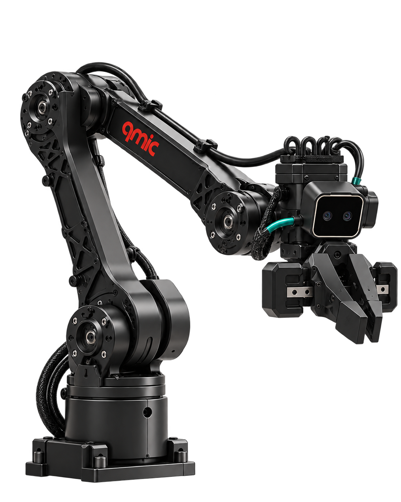
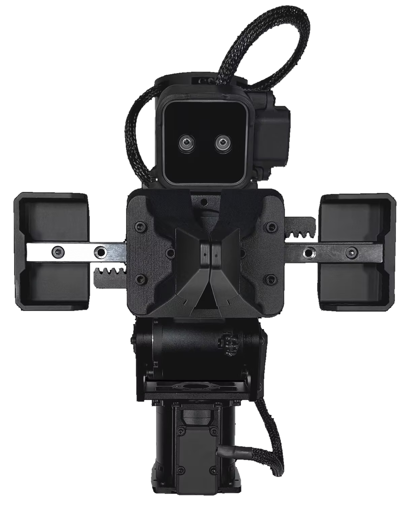
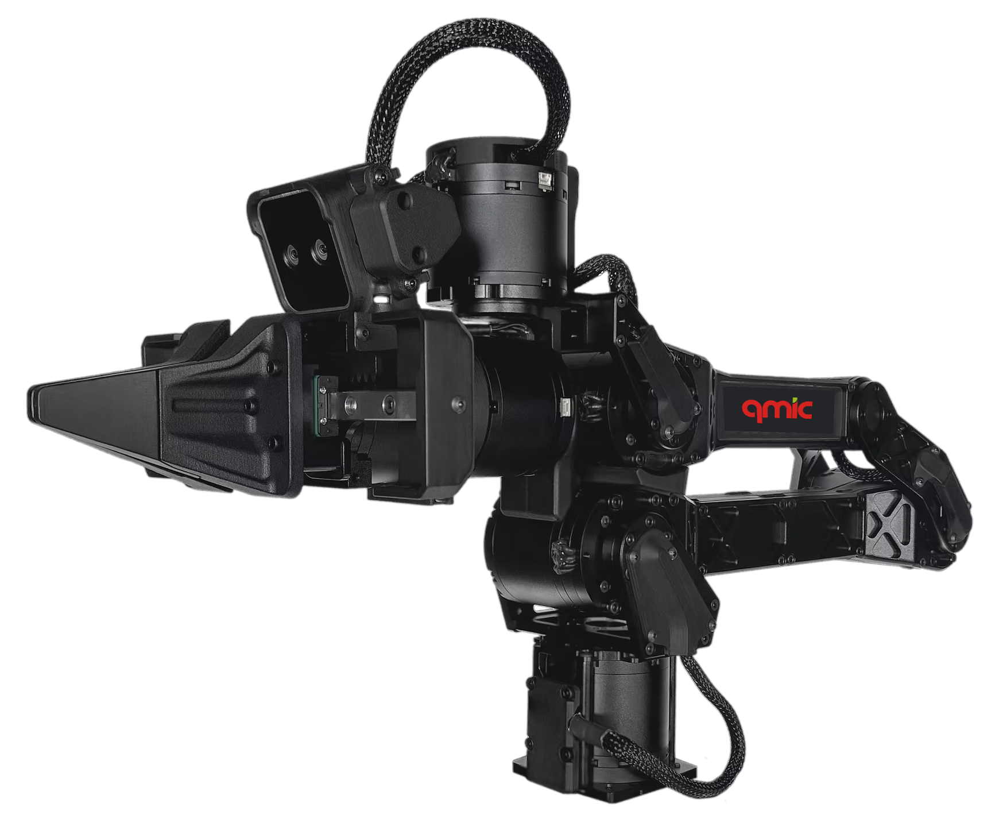
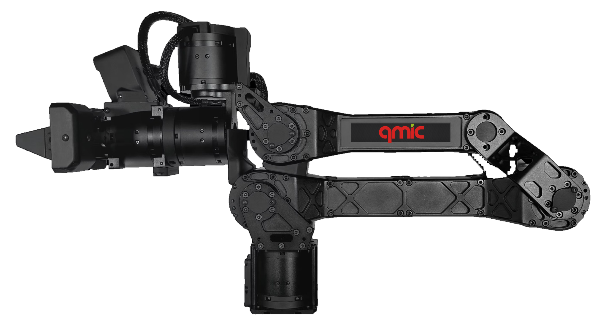

01 / THREE PROTOTYPE GENERATIONS
Three prototype
Three prototype
generations.
Evaluated in laboratories, simulations and real vehicles.




Three prototype generations evaluated in laboratories, simulations and real vehicles advance a new platform for passenger interaction and assistance.
Evaluated in laboratories, simulations and real vehicles.
Passengers can interact directly with an AI-powered robotic companion.
Passengers can connect with a person outside the vehicle through the robot.
Waleef combines natural, context-aware conversation with a physical robotic presence inside the vehicle.
Its conversational AI supports dialogue with occupants, while its interaction design encompasses both responses to requests and proactive engagement.
This approach allows developers to explore passenger experiences that extend beyond a voice interface. Companionship, entertainment and assistance are potential applications, with further development focused on refining how the robot interacts with occupants within the constraints of a vehicle cabin.
Waleef also supports teleoperation and telexistence, enabling someone outside the vehicle to interact through the robot.
Teleoperation allows a remote person to control the robot and communicate with occupants.
Telexistence enables that person to experience and interact with the distant environment through the robot’s supported sensing and movement capabilities.
For prospective service partners, these capabilities provide a basis for exploring remote passenger assistance and communication. Bringing AI interaction and remote human presence into one platform offers flexibility to investigate different service models and passenger needs.
A soft, compliant robotic structure and adaptable configuration underpin Waleef’s physical design.
Development explores single-robot and multiple-robot arrangements, alongside interchangeable end effectors that can support different physical interaction functions.
Together, these features create scope to adapt the platform to different vehicle layouts and interaction requirements. Its distinguishing proposition is the combination of conversational AI, embodied interaction and remote presence within a reconfigurable in-vehicle system.